Habilidades, Alijo, Elegir personaje y Bestiario
Nombres visibles: Personaje → Habilidades, Intendencia → Alijo, Estado → Heridas. Capturas del juego con los cambios.
Pestaña Habilidades
Ataques · personaje (más grande) · Clase en escritorio; en tableta y móvil, selector Ataques · Clase (punto de corte: por debajo de escritorio).
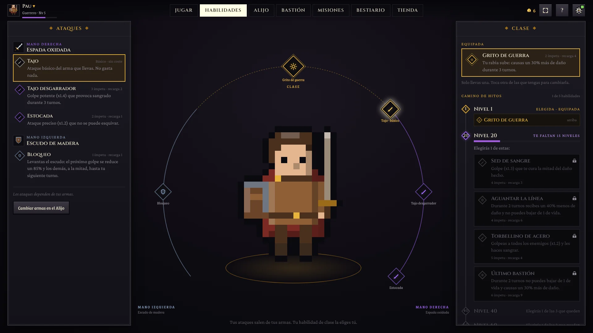
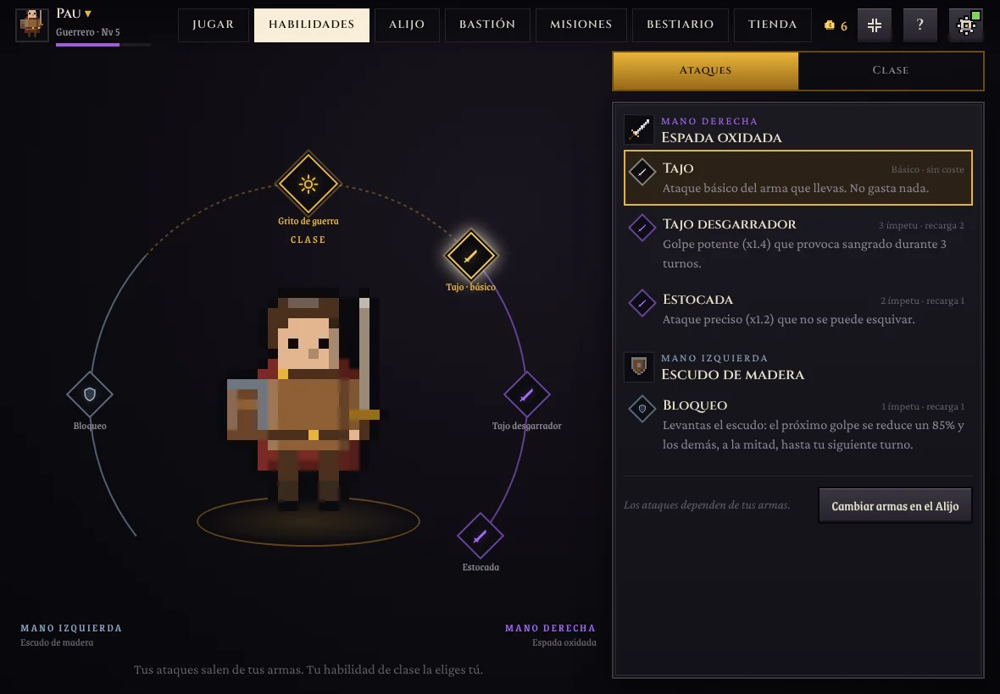
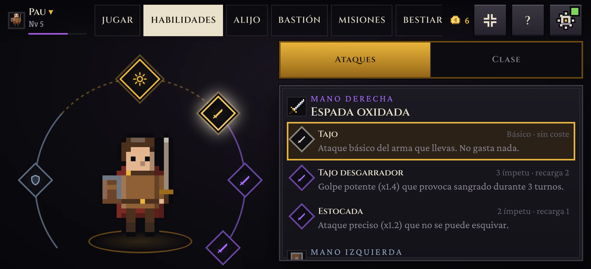
Alijo · panel Aventurero con el desglose
Sin «Ver detalles»: el panel se reduce y deja el nivel y la XP arriba. Desglose al pasar el ratón o tocar un atributo; solo fuentes distintas de cero, verde suma y rojo resta. En el móvil, nivel y atributos bajo el equipo.
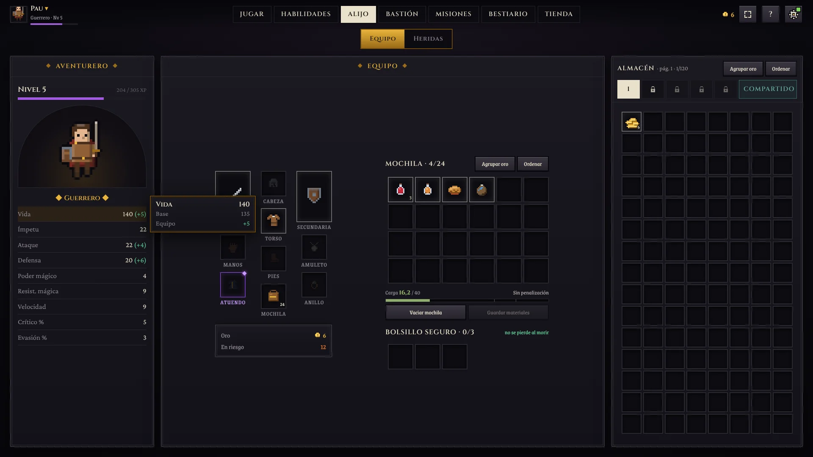
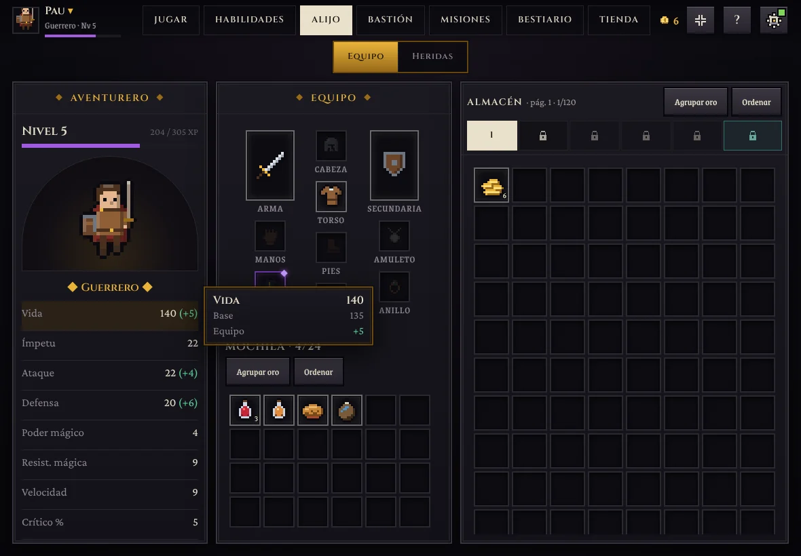
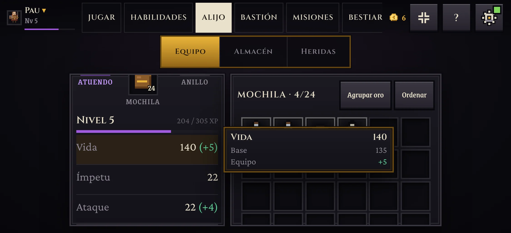
Elegir personaje con la trayectoria
Línea compacta bajo clase y nivel. Sin expediciones: «Sin expediciones» (propuesta, así todas las tarjetas miden igual).
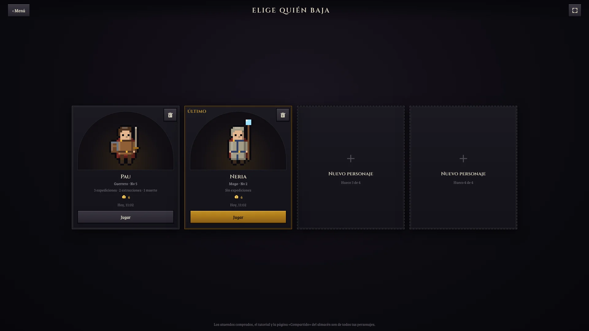
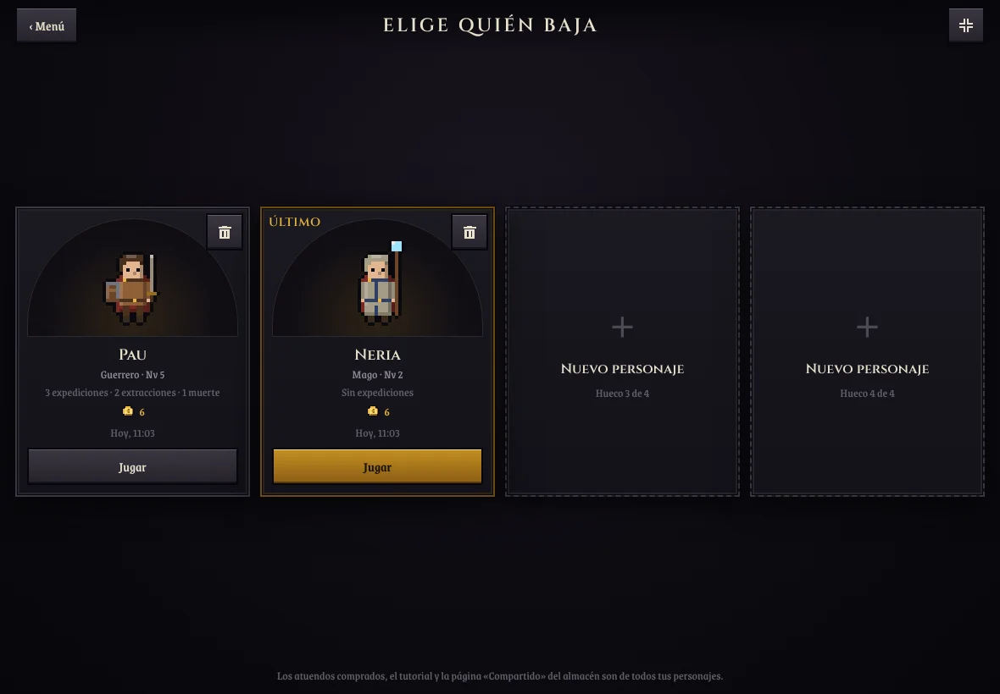
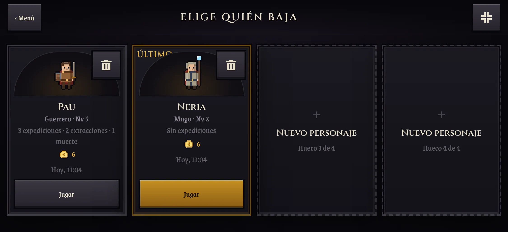
Bestiario con los contadores
Resumen arriba, «N derrotadas» en cada criatura y los jefes con «Por derrotar» o «✓ Derrotado». El contador por tipo ya existía en el guardado: no hace falta migrar.
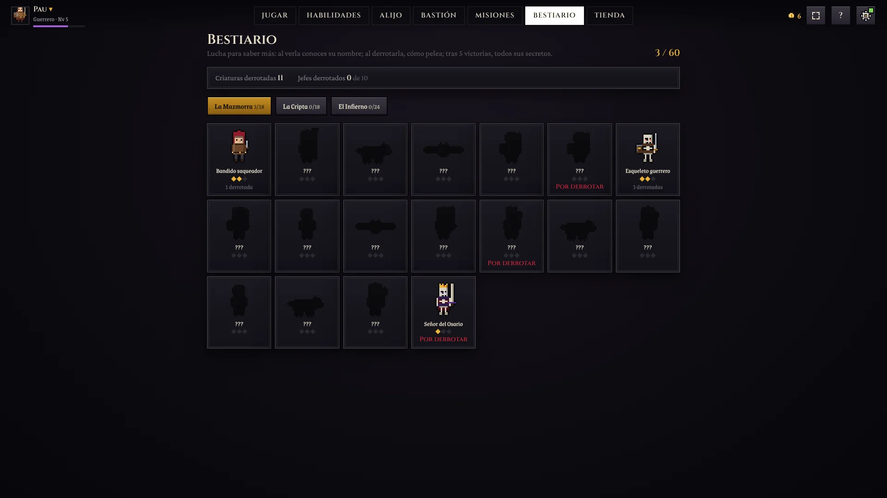
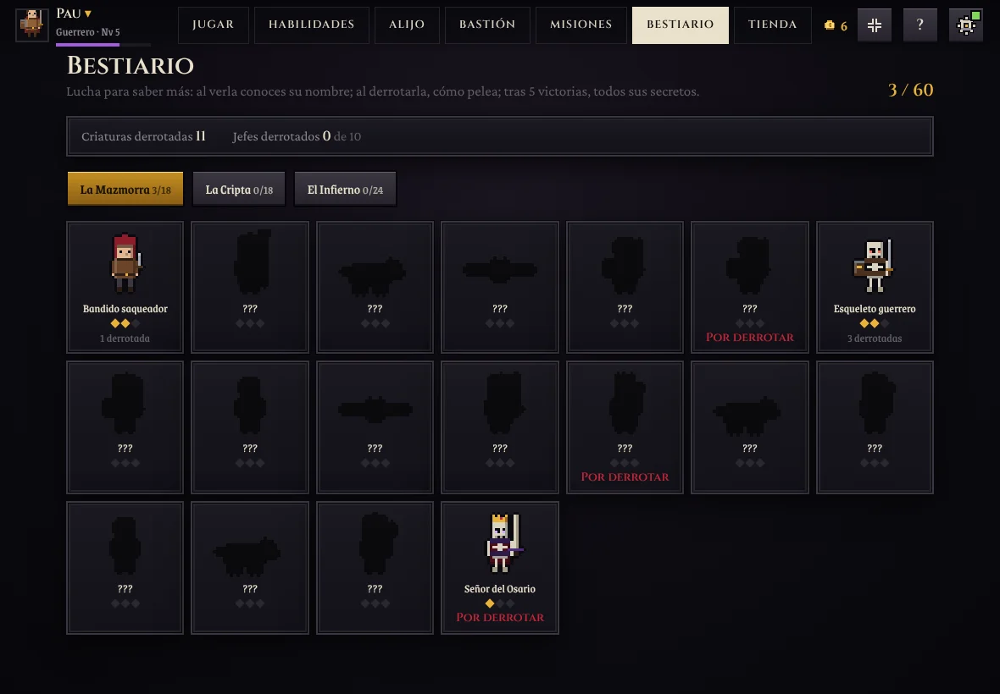
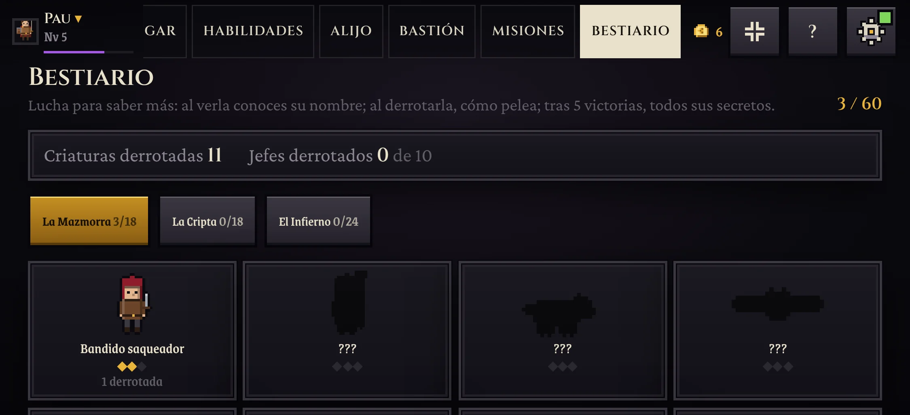